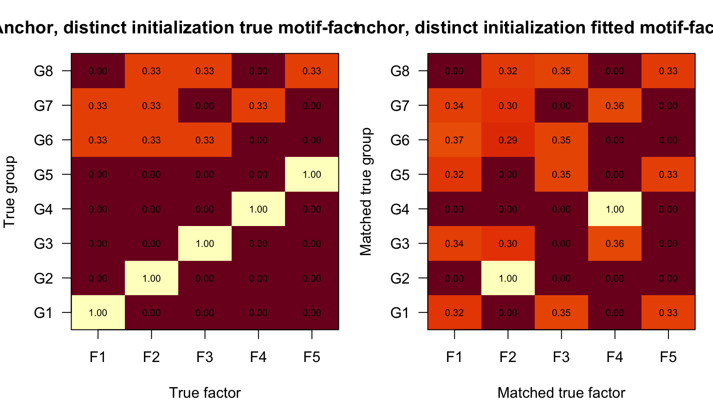
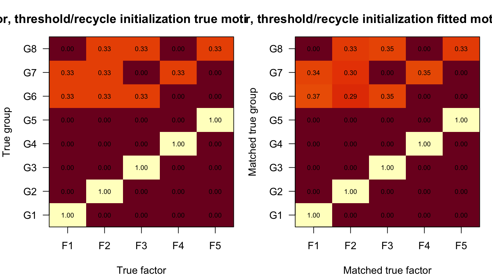
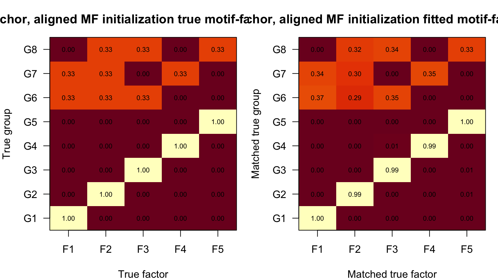
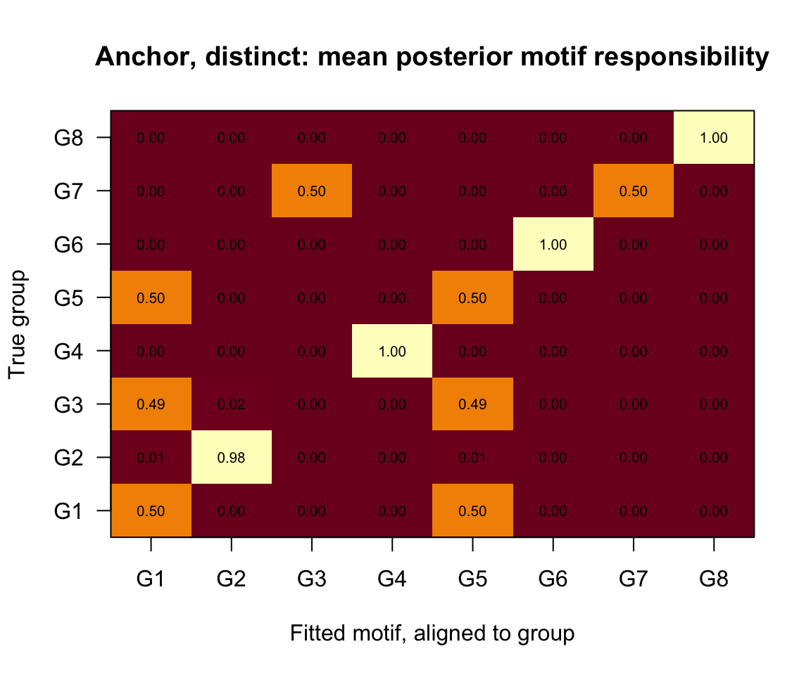
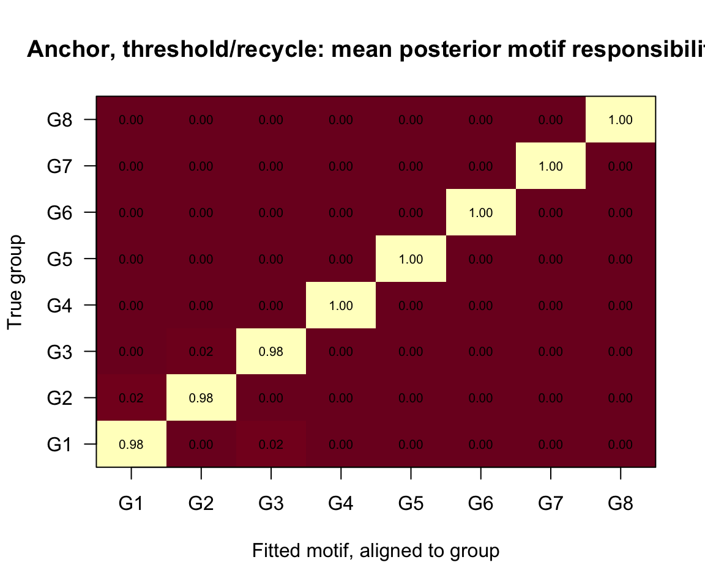
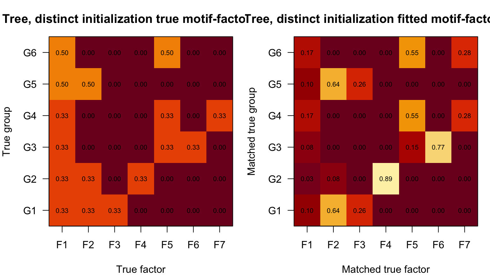
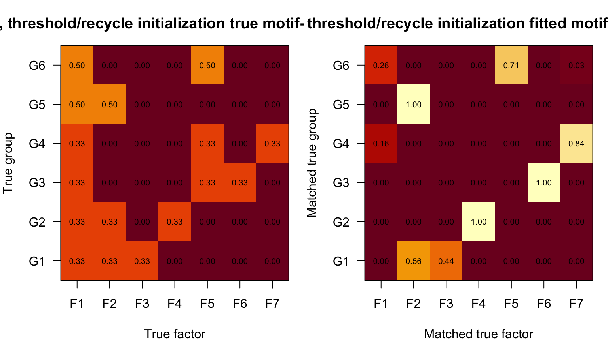
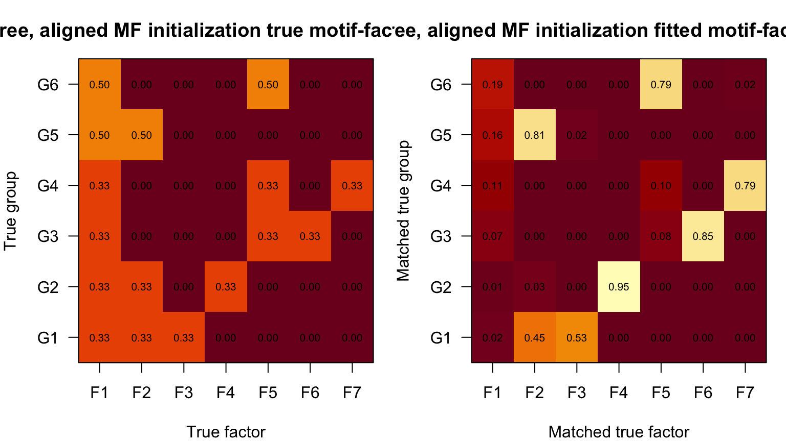
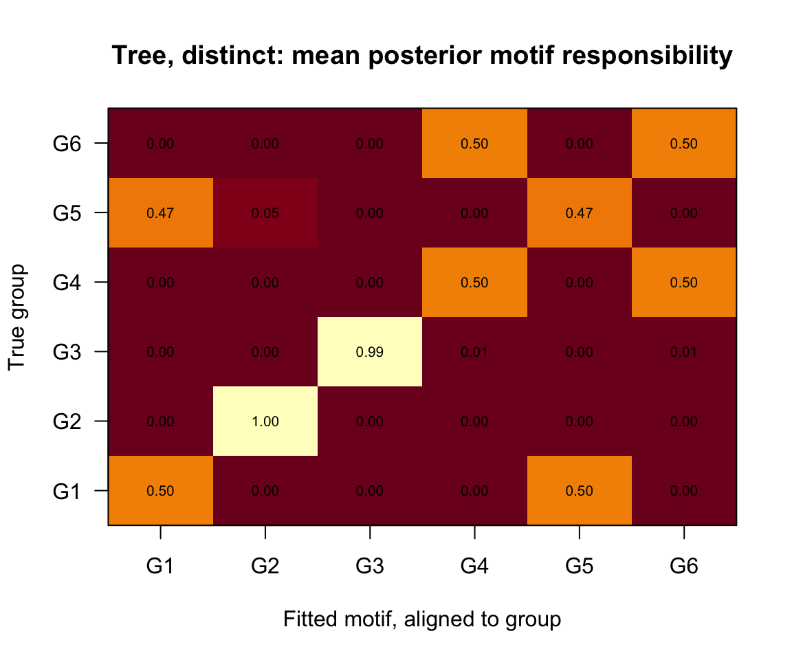
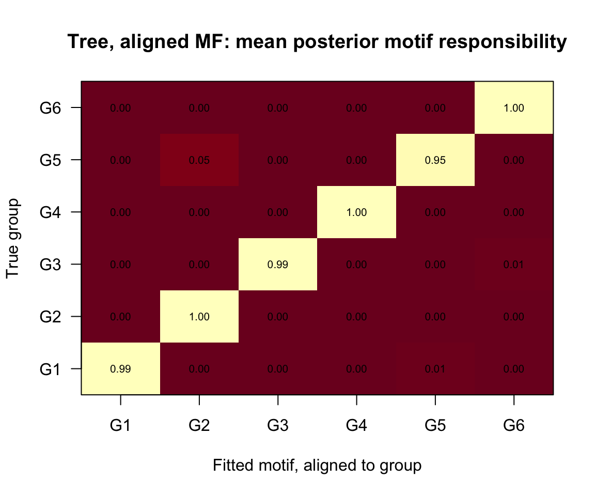

Last updated: 2026-09-04
Checks: 6 1
Knit directory: mos-nmf-experiments/
This reproducible R Markdown analysis was created with workflowr (version 1.7.2). The Checks tab describes the reproducibility checks that were applied when the results were created. The Past versions tab lists the development history.
The R Markdown file has unstaged changes. To know which version of
the R Markdown file created these results, you’ll want to first commit
it to the Git repo. If you’re still working on the analysis, you can
ignore this warning. When you’re finished, you can run
wflow_publish to commit the R Markdown file and build the
HTML.
Great job! The global environment was empty. Objects defined in the global environment can affect the analysis in your R Markdown file in unknown ways. For reproduciblity it’s best to always run the code in an empty environment.
The command set.seed(20260624) was run prior to running
the code in the R Markdown file. Setting a seed ensures that any results
that rely on randomness, e.g. subsampling or permutations, are
reproducible.
Great job! Recording the operating system, R version, and package versions is critical for reproducibility.
Nice! There were no cached chunks for this analysis, so you can be confident that you successfully produced the results during this run.
Great job! Using relative paths to the files within your workflowr project makes it easier to run your code on other machines.
Great! You are using Git for version control. Tracking code development and connecting the code version to the results is critical for reproducibility.
The results in this page were generated with repository version cf85dd5. See the Past versions tab to see a history of the changes made to the R Markdown and HTML files.
Note that you need to be careful to ensure that all relevant files for
the analysis have been committed to Git prior to generating the results
(you can use wflow_publish or
wflow_git_commit). workflowr only checks the R Markdown
file, but you know if there are other scripts or data files that it
depends on. Below is the status of the Git repository when the results
were generated:
Ignored files:
Ignored: .DS_Store
Ignored: .RData
Ignored: .Rhistory
Ignored: .Rproj.user/
Ignored: analysis/.DS_Store
Ignored: analysis/.Rhistory
Ignored: analysis/cache/
Ignored: tex/.DS_Store
Untracked files:
Untracked: code/miso-initialization.R
Unstaged changes:
Modified: analysis/6.miso-anchor-tree.Rmd
Deleted: analysis/miso-alternating.Rmd
Deleted: analysis/miso-baseline-benchmark.Rmd
Deleted: analysis/miso-multiseed-benchmark.Rmd
Deleted: analysis/miso-overspecify-D.Rmd
Deleted: analysis/miso-poi-susie-alternating.Rmd
Deleted: analysis/miso-poi-susie-scenarios.Rmd
Deleted: analysis/miso-purity-D-selection.Rmd
Deleted: analysis/miso-uncertainty-multiseed.Rmd
Deleted: analysis/miso-uncertainty-stress.Rmd
Modified: code/README.md
Modified: code/miso.R
Note that any generated files, e.g. HTML, png, CSS, etc., are not included in this status report because it is ok for generated content to have uncommitted changes.
These are the previous versions of the repository in which changes were
made to the R Markdown (analysis/6.miso-anchor-tree.Rmd)
and HTML (docs/6.miso-anchor-tree.html) files. If you’ve
configured a remote Git repository (see ?wflow_git_remote),
click on the hyperlinks in the table below to view the files as they
were in that past version.
| File | Version | Author | Date | Message |
|---|---|---|---|---|
| Rmd | cf85dd5 | Trong Dat Do | 2026-09-02 | Reorganize analyses and document MiSo recovery study |
This page revisits the two support-pattern simulations introduced in Analyses 2 and 5, now using the full MiSo model. The first scenario contains single-factor anchor motifs. The second has a tree structure and no single-factor motif. MiSo learns the factor matrix in both cases. The fitted numbers of factors \(K\), motifs \(S\), and maximum motif dimension \(D\) are set separately at the beginning of each scenario section.
source("code/miso-benchmark-utils.R")The anchor supports are the eight groups from Analysis 2. The tree supports are the six groups from Analysis 5. The early pages used larger matrices; here we keep the same structural scenarios but use \(N=480\) observations and \(M=500\) features so the demonstration is easy to rerun.
anchor_supports = list(
c(1),
c(2),
c(3),
c(4),
c(5),
c(1, 2, 3),
c(1, 2, 4),
c(2, 3, 5)
)
tree_supports = list(
c(1, 2, 3),
c(1, 2, 4),
c(1, 5, 6),
c(1, 5, 7),
c(1, 2),
c(1, 5)
)
scenario_design = data.frame(
scenario = c("anchor", "tree/no-anchor"),
N = c(480, 480),
M = c(500, 500),
K = c(5, 7),
S = c(length(anchor_supports), length(tree_supports)),
D = c(3, 3),
support_sizes = c("1 or 3", "2 or 3")
)
scenario_design scenario N M K S D support_sizes
1 anchor 480 500 5 8 3 1 or 3
2 tree/no-anchor 480 500 7 6 3 2 or 3Here \(D=3\) is the true maximum dimension in both scenarios. Some individual motifs have dimension smaller than three; MiSo still uses the common maximum \(D\), with the Gamma prior parameters available to diagnose inactive dimensions.
anchor_data = simulate_support_scenario(
N = 480,
M = 500,
K = 5,
group_supports = anchor_supports,
shape_vec = c(rep(10, 5), rep(20, 3)),
seed = 42
)
tree_data = simulate_support_scenario(
N = 480,
M = 500,
K = 7,
group_supports = tree_supports,
shape_vec = rep(18, length(tree_supports)),
seed = 47
)
data.frame(
scenario = c("anchor", "tree/no-anchor"),
total_count = c(sum(anchor_data$Y), sum(tree_data$Y)),
nonzero_entries = c(sum(anchor_data$Y > 0), sum(tree_data$Y > 0))
) scenario total_count nonzero_entries
1 anchor 13433 10964
2 tree/no-anchor 23248 19025Factor and motif labels are permutation invariant. The following helpers match learned factors to true factors by cosine similarity and match fitted motifs to true groups by total posterior responsibility.
The plots use the following fitted variational quantities:
omega[n, s] is the posterior probability that
observation \(n\) belongs to motif
\(s\), \(\omega_{ns}=q(z_n=s)\).gamma_bar[s, d, k] is the posterior probability that
dimension \(d\) of motif \(s\) selects factor \(k\), \(\bar\gamma_{sdk}=q(c_{sd}=k)\).alpha[n, s, d] and beta_sd[s, d] are the
shape and rate of the variational Gamma distribution for the loading in
dimension \(d\). Therefore its
posterior mean is \(\alpha_{nsd}/\beta_{sd}\). Here \(\beta\) is the Gamma rate; the object
called lambda_mean inside
motif_factor_scores() is an average loading, not a
rate parameter.slot_scale[s, d], denoted \(\tau_{sd}\) below, is an optional
multiplicative scale for that dimension. This page sets
update_slot_scale = FALSE, so \(\tau_{sd}=1\) for every motif and
dimension.For each motif and dimension, motif_factor_scores()
first computes the responsibility-weighted mean loading
\[ \bar\ell_{sd} = \frac{\sum_{n=1}^N \omega_{ns} \alpha_{nsd}/\beta_{sd}} {\sum_{n=1}^N \omega_{ns}}. \]
It then aggregates the \(D\) dimensions into the unnormalized motif–factor strength
\[ A_{sk}=\sum_{d=1}^D \tau_{sd}\,\bar\ell_{sd}\,\bar\gamma_{sdk}. \]
The fitted \(S\times K\) heatmap displays the row-normalized matrix \(\widetilde A_{sk}=A_{sk}/\sum_{j=1}^K A_{sj}\). Thus a cell is the estimated share of a motif’s total loading strength carried by a factor. It is not merely \(\sum_d\bar\gamma_{sdk}\): dimensions with larger expected loadings contribute more. Every row of the displayed matrix sums to one. The implementation applies a \(10^{-12}\) floor to denominators and fitted strengths only to avoid numerical division by zero.
For comparison, if the true support of group \(g\) is \({\cal A}_g\), the true \(S\times K\) map is
\[ T_{gk}=\frac{\mathbf{1}\{k\in {\cal A}_g\}}{|{\cal A}_g|}. \]
This gives equal share to every truly active factor and also makes each row sum to one. It records support membership, whereas the fitted map records estimated loading strength; the comparison therefore emphasizes whether the fitted mass falls on the correct support rather than requiring equal fitted weights.
Because both factor and motif labels are arbitrary, the display
applies two permutations after fitting. Learned factors are matched to
true factors by the one-to-one assignment that maximizes the sum of
cosine similarities between rows of the learned and true factor
matrices. Fitted motifs are matched to true groups by the one-to-one
assignment that maximizes \(\sum_n\omega_{n,s(g)}\mathbf{1}\{g_n=g\}\).
These steps only reorder rows or columns for evaluation; the true labels
are never supplied to miso().
The posterior-responsibility heatmap displays
\[ R_{gh}=\frac{1}{N_g}\sum_{n:g_n=g}\omega_{n,s(h)}, \]
where \(s(h)\) is the fitted motif aligned to true group \(h\). Its rows sum to one. A large diagonal entry means that observations from true group \(g\) place most of their posterior mass on the corresponding fitted motif; off-diagonal mass shows uncertainty or merging between motifs. All heatmaps use the same fixed color range from zero to one, and the printed cell values are these matrices rounded to two decimal places.
maximum_weight_assignment = function(score) {
n = max(nrow(score), ncol(score))
padded = matrix(0, nrow = n, ncol = n)
padded[seq_len(nrow(score)), seq_len(ncol(score))] = score
if (requireNamespace("clue", quietly = TRUE)) {
return(as.integer(clue::solve_LSAP(padded, maximum = TRUE)))
}
assignment = rep(NA_integer_, n)
available_rows = seq_len(n)
available_columns = seq_len(n)
for (j in seq_len(n)) {
candidate = which(
padded[available_rows, available_columns, drop = FALSE] ==
max(padded[available_rows, available_columns, drop = FALSE]),
arr.ind = TRUE
)[1, ]
row = available_rows[candidate[1]]
column = available_columns[candidate[2]]
assignment[row] = column
available_rows = setdiff(available_rows, row)
available_columns = setdiff(available_columns, column)
}
assignment
}
match_factor_rows = function(F_hat, F_true) {
similarity = row_cosine(F_hat, F_true)
assignment = maximum_weight_assignment(similarity)
learned_to_true = rep(NA_integer_, nrow(F_hat))
matched = assignment[seq_len(nrow(F_hat))]
learned_to_true[matched <= nrow(F_true)] =
matched[matched <= nrow(F_true)]
unmatched = which(is.na(learned_to_true))
if (length(unmatched) > 0) {
learned_to_true[unmatched] = max.col(
similarity[unmatched, , drop = FALSE], ties.method = "first"
)
}
attr(learned_to_true, "true_K") = nrow(F_true)
list(
table = data.frame(
learned_factor = seq_len(nrow(F_hat)),
matched_true_factor = as.integer(learned_to_true),
cosine = similarity[cbind(seq_len(nrow(F_hat)), learned_to_true)]
),
learned_to_true = learned_to_true,
similarity = similarity
)
}
map_scores_to_true = function(scores, learned_to_true) {
true_K = attr(learned_to_true, "true_K")
if (is.null(true_K)) true_K = max(learned_to_true)
out = matrix(0, nrow = nrow(scores), ncol = true_K)
for (k in seq_along(learned_to_true)) {
out[, learned_to_true[k]] = out[, learned_to_true[k]] + scores[, k]
}
out
}
match_motifs_to_groups = function(omega, true_group) {
groups = sort(unique(true_group))
S_fit = ncol(omega)
score = vapply(groups, function(g) {
colSums(omega[true_group == g, , drop = FALSE])
}, numeric(S_fit))
assignment = maximum_weight_assignment(score)
fit_to_true = assignment[seq_len(S_fit)]
unmatched_fits = which(fit_to_true > length(groups))
if (length(unmatched_fits) > 0) {
fit_to_true[unmatched_fits] = max.col(
score[unmatched_fits, , drop = FALSE], ties.method = "first"
)
}
true_to_fit = match(seq_along(groups), fit_to_true)
unmatched_groups = which(is.na(true_to_fit))
if (length(unmatched_groups) > 0) {
true_to_fit[unmatched_groups] = vapply(unmatched_groups, function(g) {
which.max(score[, g])
}, integer(1))
}
list(
fit_to_true = fit_to_true,
true_to_fit = true_to_fit,
score = score
)
}
true_motif_matrix = function(supports, K) {
# T[g, k] = 1 / |A_g| for a factor in the true support A_g, and zero otherwise.
out = matrix(0, nrow = length(supports), ncol = K)
for (s in seq_along(supports)) {
out[s, supports[[s]]] = 1 / length(supports[[s]])
}
out
}
distinct_slot_winners = function(gamma_bar) {
winners = apply(gamma_bar, c(1, 2), which.max)
apply(winners, 1, function(x) length(unique(x)))
}
evaluate_miso = function(fit, dat, supports, scenario) {
# Match learned labels to truth only for evaluation and plotting.
factor_match = match_factor_rows(fit$F, dat$F0)
motif_match = match_motifs_to_groups(fit$omega, dat$grp)
# Observation-level expected factor loadings are used for support metrics.
observation_scores = miso_observation_factor_scores(fit)
# A[s, k] = sum_d tau[s, d] * ell_bar[s, d] * gamma_bar[s, d, k].
motif_scores = motif_factor_scores(fit)$scores
# Reorder factor columns into true-factor order, normalize each motif to sum 1,
# and reorder motif rows into true-group order.
motif_scores = map_scores_to_true(
motif_scores, factor_match$learned_to_true
)
motif_scores = normalize_scores(motif_scores)
motif_scores = motif_scores[motif_match$true_to_fit, , drop = FALSE]
# R[g, s] is the mean posterior responsibility for fitted motif s among
# observations generated from true group g.
group_responsibility = do.call(rbind, lapply(seq_along(supports), function(g) {
colMeans(fit$omega[dat$grp == g, , drop = FALSE])
}))
group_responsibility = group_responsibility[
, motif_match$true_to_fit, drop = FALSE
]
soft_mass = mean(fit$omega[cbind(
seq_len(nrow(fit$omega)), motif_match$true_to_fit[dat$grp]
)])
metrics = data.frame(
scenario = scenario,
true_K = nrow(dat$F0),
true_S = length(supports),
true_D = max(lengths(supports)),
fitted_K = nrow(fit$F),
fitted_S = ncol(fit$omega),
fitted_D = dim(fit$gamma_bar)[2],
median_initial_distinct_factors = median(
distinct_slot_winners(fit$gamma_init$gamma_bar)
),
median_final_distinct_factors = median(
distinct_slot_winners(fit$gamma_bar)
),
mean_initial_gamma_entropy = mean(
motif_gamma_entropy(fit$gamma_init$gamma_bar)
),
mean_initial_top_gamma = mean(
apply(fit$gamma_init$gamma_bar, c(1, 2), max)
),
soft_motif_accuracy = soft_mass,
exact_support_accuracy = support_accuracy(
observation_scores, factor_match$learned_to_true, dat
),
support_jaccard = support_jaccard(
observation_scores, factor_match$learned_to_true, dat
),
mean_factor_cosine = mean(factor_match$table$cosine),
mean_assignment_certainty = mean(apply(fit$omega, 1, max))
)
motif_summary = do.call(rbind, lapply(seq_along(supports), function(g) {
n_active = length(supports[[g]])
estimated = order(motif_scores[g, ], decreasing = TRUE)[seq_len(n_active)]
data.frame(
true_group = paste0("G", g),
matched_fitted_motif = paste0("S", motif_match$true_to_fit[g]),
true_factors = support_label(supports[[g]]),
estimated_top_factors = support_label(estimated),
posterior_mass_on_true_factors = round(
sum(motif_scores[g, supports[[g]]]), 3
)
)
}))
list(
metrics = metrics,
factor_match = factor_match,
motif_match = motif_match,
group_responsibility = group_responsibility,
true_motif_share = true_motif_matrix(supports, nrow(dat$F0)),
fitted_motif_share = motif_scores,
motif_summary = motif_summary
)
}
plot_heatmap = function(mat, main, xlab, ylab, xlabels, ylabels,
digits = 2) {
# Every displayed matrix is on [0, 1]; text reports its cell values directly.
image(
x = seq_len(ncol(mat)), y = seq_len(nrow(mat)), z = t(mat),
axes = FALSE, xlab = xlab, ylab = ylab, main = main,
zlim = c(0, 1), col = hcl.colors(100, "YlOrRd")
)
axis(1, at = seq_len(ncol(mat)), labels = xlabels)
axis(2, at = seq_len(nrow(mat)), labels = ylabels, las = 1)
for (i in seq_len(nrow(mat))) {
for (j in seq_len(ncol(mat))) {
text(j, i, sprintf(paste0("%.", digits, "f"), mat[i, j]), cex = 0.65)
}
}
box()
}
plot_scenario = function(result, scenario) {
S = nrow(result$true_motif_share)
K = ncol(result$true_motif_share)
group_labels = paste0("G", seq_len(S))
factor_labels = paste0("F", seq_len(K))
op = par(mfrow = c(1, 2), mar = c(4, 4, 3, 1))
on.exit(par(op))
plot_heatmap(
result$true_motif_share,
paste(scenario, "true motif-factor map"),
"True factor", "True group", factor_labels, group_labels
)
plot_heatmap(
result$fitted_motif_share,
paste(scenario, "fitted motif-factor map"),
"Matched true factor", "Matched true group", factor_labels, group_labels
)
}The anchor scenario contains five one-factor motifs and three three-factor motifs. It checks whether MiSo can learn elementary factor directions and reuse them inside composite motifs.
Edit the first three values in the following chunk to choose the
fitted \(K,S,D\) for the anchor
analysis. The defaults are the true values. The distinct
and aligned_mf require
ANCHOR_FIT_D <= ANCHOR_FIT_K.
ANCHOR_FIT_K = 5
ANCHOR_FIT_S = 8
ANCHOR_FIT_D = 3
ANCHOR_FIT_SEED = 1
data.frame(
fitted_K = ANCHOR_FIT_K,
fitted_S = ANCHOR_FIT_S,
fitted_D = ANCHOR_FIT_D,
seed = ANCHOR_FIT_SEED
) fitted_K fitted_S fitted_D seed
1 5 8 3 1anchor_fit_distinct = fit_miso_scenario(
anchor_data,
scenario = "anchor",
K = ANCHOR_FIT_K,
S = ANCHOR_FIT_S,
D = ANCHOR_FIT_D,
seed = ANCHOR_FIT_SEED,
motif_initialization = "distinct"
)
anchor_fit_threshold = fit_miso_scenario(
anchor_data,
scenario = "anchor",
K = ANCHOR_FIT_K,
S = ANCHOR_FIT_S,
D = ANCHOR_FIT_D,
seed = ANCHOR_FIT_SEED,
motif_initialization = "threshold"
)
anchor_fit_aligned_mf = fit_miso_scenario(
anchor_data,
scenario = "anchor",
K = ANCHOR_FIT_K,
S = ANCHOR_FIT_S,
D = ANCHOR_FIT_D,
seed = ANCHOR_FIT_SEED,
motif_initialization = "aligned_mf"
)
stopifnot(
all(dim(anchor_fit_distinct$gamma_bar) ==
c(ANCHOR_FIT_S, ANCHOR_FIT_D, ANCHOR_FIT_K)),
all(dim(anchor_fit_threshold$gamma_bar) ==
c(ANCHOR_FIT_S, ANCHOR_FIT_D, ANCHOR_FIT_K)),
all(dim(anchor_fit_aligned_mf$gamma_bar) ==
c(ANCHOR_FIT_S, ANCHOR_FIT_D, ANCHOR_FIT_K))
)anchor_result_distinct = evaluate_miso(
anchor_fit_distinct, anchor_data, anchor_supports, "anchor"
)
anchor_result_threshold = evaluate_miso(
anchor_fit_threshold, anchor_data, anchor_supports, "anchor"
)
anchor_result_aligned_mf = evaluate_miso(
anchor_fit_aligned_mf, anchor_data, anchor_supports, "anchor"
)
anchor_recovery_summary = rbind(
transform(anchor_result_distinct$metrics, initialization = "distinct"),
transform(anchor_result_threshold$metrics,
initialization = "threshold/recycle"),
transform(anchor_result_aligned_mf$metrics,
initialization = "aligned MF posterior")
)
numeric_columns = vapply(anchor_recovery_summary, is.numeric, logical(1))
anchor_recovery_summary[numeric_columns] = round(
anchor_recovery_summary[numeric_columns], 3
)
anchor_recovery_summary scenario true_K true_S true_D fitted_K fitted_S fitted_D
1 anchor 5 8 3 5 8 3
2 anchor 5 8 3 5 8 3
3 anchor 5 8 3 5 8 3
median_initial_distinct_factors median_final_distinct_factors
1 3 3
2 1 1
3 3 2
mean_initial_gamma_entropy mean_initial_top_gamma soft_motif_accuracy
1 0.139 0.960 0.684
2 0.139 0.960 0.992
3 0.361 0.809 0.992
exact_support_accuracy support_jaccard mean_factor_cosine
1 0.994 0.994 0.989
2 0.992 0.992 0.990
3 0.992 0.992 0.990
mean_assignment_certainty initialization
1 0.749 distinct
2 0.998 threshold/recycle
3 0.998 aligned MF posteriorrbind(
cbind(initialization = "distinct",
anchor_result_distinct$motif_summary),
cbind(initialization = "threshold/recycle",
anchor_result_threshold$motif_summary),
cbind(initialization = "aligned MF posterior",
anchor_result_aligned_mf$motif_summary)
) initialization true_group matched_fitted_motif true_factors
1 distinct G1 S7 1
2 distinct G2 S3 2
3 distinct G3 S8 3
4 distinct G4 S5 4
5 distinct G5 S2 5
6 distinct G6 S4 1,2,3
7 distinct G7 S1 1,2,4
8 distinct G8 S6 2,3,5
9 threshold/recycle G1 S8 1
10 threshold/recycle G2 S3 2
11 threshold/recycle G3 S2 3
12 threshold/recycle G4 S5 4
13 threshold/recycle G5 S7 5
14 threshold/recycle G6 S4 1,2,3
15 threshold/recycle G7 S1 1,2,4
16 threshold/recycle G8 S6 2,3,5
17 aligned MF posterior G1 S8 1
18 aligned MF posterior G2 S3 2
19 aligned MF posterior G3 S2 3
20 aligned MF posterior G4 S5 4
21 aligned MF posterior G5 S7 5
22 aligned MF posterior G6 S4 1,2,3
23 aligned MF posterior G7 S1 1,2,4
24 aligned MF posterior G8 S6 2,3,5
estimated_top_factors posterior_mass_on_true_factors
1 3 0.319
2 2 0.997
3 4 0.000
4 4 0.997
5 3 0.334
6 1,2,3 1.000
7 1,2,4 1.000
8 2,3,5 1.000
9 1 1.000
10 2 1.000
11 3 1.000
12 4 1.000
13 5 1.000
14 1,2,3 1.000
15 1,2,4 1.000
16 2,3,5 1.000
17 1 0.997
18 2 0.994
19 3 0.990
20 4 0.990
21 5 1.000
22 1,2,3 1.000
23 1,2,4 1.000
24 2,3,5 1.000plot_scenario(anchor_result_distinct, "Anchor, distinct initialization")
plot_scenario(anchor_result_threshold, "Anchor, threshold/recycle initialization")
plot_scenario(anchor_result_aligned_mf, "Anchor, aligned MF initialization")
plot_heatmap(
anchor_result_distinct$group_responsibility,
"Anchor, distinct: mean posterior motif responsibility",
"Fitted motif, aligned to group", "True group",
paste0("G", seq_len(ncol(anchor_result_distinct$group_responsibility))),
paste0("G", seq_len(nrow(anchor_result_distinct$group_responsibility)))
)
plot_heatmap(
anchor_result_threshold$group_responsibility,
"Anchor, threshold/recycle: mean posterior motif responsibility",
"Fitted motif, aligned to group", "True group",
paste0("G", seq_len(ncol(anchor_result_threshold$group_responsibility))),
paste0("G", seq_len(nrow(anchor_result_threshold$group_responsibility)))
)
plot_heatmap(
anchor_result_aligned_mf$group_responsibility,
"Anchor, aligned MF: mean posterior motif responsibility",
"Fitted motif, aligned to group", "True group",
paste0("G", seq_len(ncol(anchor_result_aligned_mf$group_responsibility))),
paste0("G", seq_len(nrow(anchor_result_aligned_mf$group_responsibility)))
)

The diagonal responsibility pattern checks motif recovery directly, while the factor maps separate dictionary recovery from motif recovery. The fitted map is shown after label matching only; the true labels were not used during fitting.
Every tree motif contains factor 1 and then follows one of two branches, through factor 2 or factor 5. Four motifs add a branch-specific leaf. Because there are no one-factor groups, recovery must use repeated co-occurrence across motifs rather than isolated anchors.
Edit the first three values in the following chunk to choose the
fitted \(K,S,D\) for the tree analysis.
The defaults are the true values. The distinct and
aligned_mf require
TREE_FIT_D <= TREE_FIT_K.
TREE_FIT_K = 7
TREE_FIT_S = 6
TREE_FIT_D = 3
TREE_FIT_SEED = 2
data.frame(
fitted_K = TREE_FIT_K,
fitted_S = TREE_FIT_S,
fitted_D = TREE_FIT_D,
seed = TREE_FIT_SEED
) fitted_K fitted_S fitted_D seed
1 7 6 3 2tree_fit_distinct = fit_miso_scenario(
tree_data,
scenario = "tree",
K = TREE_FIT_K,
S = TREE_FIT_S,
D = TREE_FIT_D,
seed = TREE_FIT_SEED,
motif_initialization = "distinct"
)
tree_fit_threshold = fit_miso_scenario(
tree_data,
scenario = "tree",
K = TREE_FIT_K,
S = TREE_FIT_S,
D = TREE_FIT_D,
seed = TREE_FIT_SEED,
motif_initialization = "threshold"
)
tree_fit_aligned_mf = fit_miso_scenario(
tree_data,
scenario = "tree",
K = TREE_FIT_K,
S = TREE_FIT_S,
D = TREE_FIT_D,
seed = TREE_FIT_SEED,
motif_initialization = "aligned_mf"
)
stopifnot(
all(dim(tree_fit_distinct$gamma_bar) ==
c(TREE_FIT_S, TREE_FIT_D, TREE_FIT_K)),
all(dim(tree_fit_threshold$gamma_bar) ==
c(TREE_FIT_S, TREE_FIT_D, TREE_FIT_K)),
all(dim(tree_fit_aligned_mf$gamma_bar) ==
c(TREE_FIT_S, TREE_FIT_D, TREE_FIT_K))
)tree_result_distinct = evaluate_miso(
tree_fit_distinct, tree_data, tree_supports, "tree/no-anchor"
)
tree_result_threshold = evaluate_miso(
tree_fit_threshold, tree_data, tree_supports, "tree/no-anchor"
)
tree_result_aligned_mf = evaluate_miso(
tree_fit_aligned_mf, tree_data, tree_supports, "tree/no-anchor"
)
tree_recovery_summary = rbind(
transform(tree_result_distinct$metrics, initialization = "distinct"),
transform(tree_result_threshold$metrics,
initialization = "threshold/recycle"),
transform(tree_result_aligned_mf$metrics,
initialization = "aligned MF posterior")
)
numeric_columns = vapply(tree_recovery_summary, is.numeric, logical(1))
tree_recovery_summary[numeric_columns] = round(
tree_recovery_summary[numeric_columns], 3
)
tree_recovery_summary scenario true_K true_S true_D fitted_K fitted_S fitted_D
1 tree/no-anchor 7 6 3 7 6 3
2 tree/no-anchor 7 6 3 7 6 3
3 tree/no-anchor 7 6 3 7 6 3
median_initial_distinct_factors median_final_distinct_factors
1 3.0 3.0
2 1.5 1.5
3 3.0 3.0
mean_initial_gamma_entropy mean_initial_top_gamma soft_motif_accuracy
1 0.130 0.957 0.660
2 0.130 0.957 0.968
3 0.345 0.817 0.987
exact_support_accuracy support_jaccard mean_factor_cosine
1 0.988 0.992 0.819
2 0.642 0.793 0.755
3 0.990 0.993 0.773
mean_assignment_certainty initialization
1 0.670 distinct
2 0.999 threshold/recycle
3 0.999 aligned MF posteriorrbind(
cbind(initialization = "distinct",
tree_result_distinct$motif_summary),
cbind(initialization = "threshold/recycle",
tree_result_threshold$motif_summary),
cbind(initialization = "aligned MF posterior",
tree_result_aligned_mf$motif_summary)
) initialization true_group matched_fitted_motif true_factors
1 distinct G1 S2 1,2,3
2 distinct G2 S6 1,2,4
3 distinct G3 S1 1,5,6
4 distinct G4 S3 1,5,7
5 distinct G5 S4 1,2
6 distinct G6 S5 1,5
7 threshold/recycle G1 S2 1,2,3
8 threshold/recycle G2 S6 1,2,4
9 threshold/recycle G3 S1 1,5,6
10 threshold/recycle G4 S3 1,5,7
11 threshold/recycle G5 S4 1,2
12 threshold/recycle G6 S5 1,5
13 aligned MF posterior G1 S2 1,2,3
14 aligned MF posterior G2 S6 1,2,4
15 aligned MF posterior G3 S1 1,5,6
16 aligned MF posterior G4 S3 1,5,7
17 aligned MF posterior G5 S4 1,2
18 aligned MF posterior G6 S5 1,5
estimated_top_factors posterior_mass_on_true_factors
1 1,2,3 1.000
2 1,2,4 1.000
3 1,5,6 1.000
4 1,5,7 1.000
5 2,3 0.738
6 5,7 0.725
7 1,2,3 1.000
8 1,2,4 1.000
9 1,2,6 1.000
10 1,2,7 1.000
11 1,2 1.000
12 1,5 0.970
13 1,2,3 1.000
14 1,2,4 1.000
15 1,5,6 1.000
16 1,5,7 1.000
17 1,2 0.979
18 1,5 0.982plot_scenario(tree_result_distinct, "Tree, distinct initialization")
plot_scenario(tree_result_threshold, "Tree, threshold/recycle initialization")
plot_scenario(tree_result_aligned_mf, "Tree, aligned MF initialization")
plot_heatmap(
tree_result_distinct$group_responsibility,
"Tree, distinct: mean posterior motif responsibility",
"Fitted motif, aligned to group", "True group",
paste0("G", seq_len(ncol(tree_result_distinct$group_responsibility))),
paste0("G", seq_len(nrow(tree_result_distinct$group_responsibility)))
)
plot_heatmap(
tree_result_threshold$group_responsibility,
"Tree, threshold/recycle: mean posterior motif responsibility",
"Fitted motif, aligned to group", "True group",
paste0("G", seq_len(ncol(tree_result_threshold$group_responsibility))),
paste0("G", seq_len(nrow(tree_result_threshold$group_responsibility)))
)
plot_heatmap(
tree_result_aligned_mf$group_responsibility,
"Tree, aligned MF: mean posterior motif responsibility",
"Fitted motif, aligned to group", "True group",
paste0("G", seq_len(ncol(tree_result_aligned_mf$group_responsibility))),
paste0("G", seq_len(nrow(tree_result_aligned_mf$group_responsibility)))
)

The anchor scenario is the easier sanity check: the singleton motifs expose each factor separately, and the composite motifs test whether those parts are recombined correctly. The tree scenario is more diagnostic of MiSo because its factors are identifiable only through shared motif structure. Within each scenario, the three fits hold \(K,S,D\) and the random seed fixed, so differences in recovery can be attributed to the motif initialization. Changing the scenario-specific settings above makes it possible to study under- or over-specification without modifying the fitting and evaluation code.
In the default runs, aligned_mf begins with three
distinct factor directions per motif in both scenarios. In the anchor
scenario it attains the same high soft motif accuracy as
threshold/recycle, while its median final number of distinct directions
is two rather than one. In the tree scenario it retains a median of
three distinct directions and combines high motif accuracy with the best
support recovery of the three initializations. This is the intended
compromise: retain the dimensional coverage of distinct initialization
while using the uncertainty already learned by MF-Poisson-SuSiE.
sessionInfo()R version 4.5.2 (2025-10-31)
Platform: aarch64-apple-darwin20
Running under: macOS Tahoe 26.5.1
Matrix products: default
BLAS: /System/Library/Frameworks/Accelerate.framework/Versions/A/Frameworks/vecLib.framework/Versions/A/libBLAS.dylib
LAPACK: /Library/Frameworks/R.framework/Versions/4.5-arm64/Resources/lib/libRlapack.dylib; LAPACK version 3.12.1
locale:
[1] en_US.UTF-8/en_US.UTF-8/en_US.UTF-8/C/en_US.UTF-8/en_US.UTF-8
time zone: America/New_York
tzcode source: internal
attached base packages:
[1] stats graphics grDevices utils datasets methods base
loaded via a namespace (and not attached):
[1] vctrs_0.7.3 cli_3.6.6 knitr_1.51 rlang_1.3.0
[5] xfun_0.56 stringi_1.8.7 otel_0.2.0 promises_1.5.0
[9] clue_0.3-68 jsonlite_2.0.0 workflowr_1.7.2 glue_1.8.1
[13] rprojroot_2.1.1 git2r_0.36.2 htmltools_0.5.9 httpuv_1.6.17
[17] sass_0.4.10 rmarkdown_2.30 jquerylib_0.1.4 evaluate_1.0.5
[21] tibble_3.3.1 fastmap_1.2.0 yaml_2.3.12 lifecycle_1.0.5
[25] whisker_0.4.1 stringr_1.6.0 cluster_2.1.8.1 compiler_4.5.2
[29] fs_2.1.0 Rcpp_1.1.2 pkgconfig_2.0.3 rstudioapi_0.18.0
[33] later_1.4.8 digest_0.6.39 R6_2.6.1 pillar_1.11.1
[37] magrittr_2.0.4 bslib_0.10.0 tools_4.5.2 cachem_1.1.0